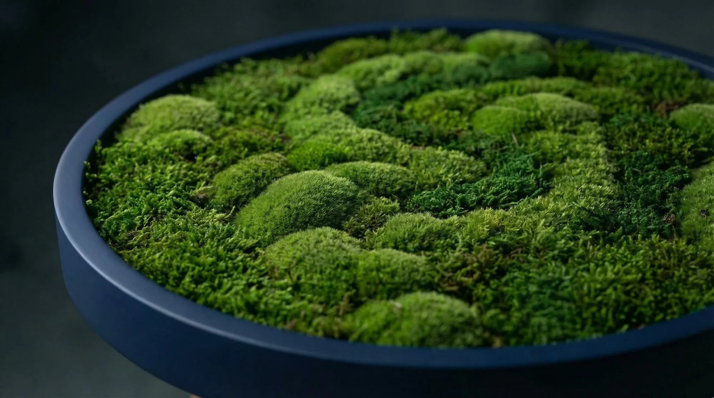

Classic / Deep tones
The Grounded Series
Deep navy, stone and forest frames anchor the texture of the moss. A restrained presence for calm, considered interiors.


The permanent collection
Hand-composed preserved moss works that bring softness, color and organic dimension to an interior—with no watering required.
Classic / Deep tones
Deep navy, stone and forest frames anchor the texture of the moss. A restrained presence for calm, considered interiors.
Color / Singular
Confident frames in oxblood, mineral teal and saffron. Each color shifts the mood without competing with the natural surface.

Made for place
Scale, frame color and composition are developed around the room. Available as a single statement or as a family of related pieces.
Begin a commission